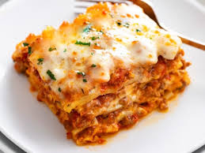

Lasagna

Description
Lasagna is wide, flat-shaped pasta, and possibly one of the oldest types of pasta.
It can also refer to a dish made with several layers of lasagna sheets alternated with sauces and various other ingredients.
It is an Italian baked meal (I must say a complete meal).
Ingrediants
- Lasagna sheets (either dried or fresh pasta)
- Ground meat
- Tomato sauce or marinara sauce
- Tomato paste (optional, for richer flavor)
- Ricotta cheese
- Mozzarella cheese (shredded or sliced)
- Parmesan cheese (grated)
- Onion (chopped)
- Garlic (minced)
Steps
- Preheat the oven to 375°F (190°C).
- Cook the meat sauce by browning the meat, adding tomato sauce, and seasoning.
- Mix ricotta cheese with Parmesan, seasoning, and optional egg.
- Cook lasagna sheets if required.
- Layer the lasagna in a dish: sauce, pasta, ricotta mix, mozzarella, and repeat.
- Cover with foil and bake for 25–30 minutes.
- Remove foil and bake for another 10–15 minutes until golden.
- Let it cool for 10–15 minutes before serving.